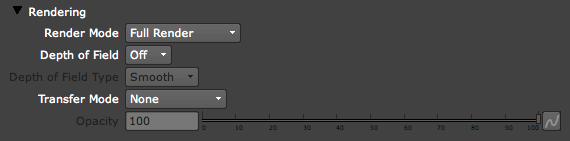
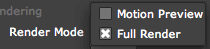
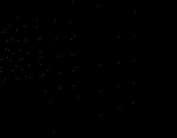
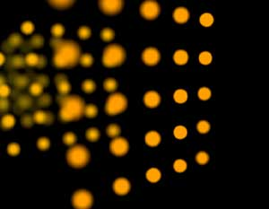
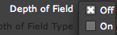
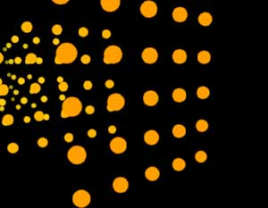
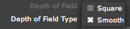
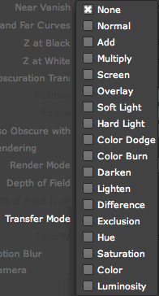

Rendering tab
The Rendering tab controls the output of the Render Mode, Depth of Field and compositing of the particles.

The Rendering tab.
Render Mode
This menu lets you choose how the particles look when they render.

There are two Render Modes.
 
Left to right, Render Mode set to Motion Preview and Full Render.
Depth of Field
Particular mimics the look of a real camera by adding a Depth of Field (DOF) simulation. How does Depth of Field work? A real camera cannot maintain focus in all depths of an image. DOF mimics the way that a real camera cannot maintain its sharp focus at all depths. DOF is useful for increasing the realism of a scene. It is also useful for matching your Particular effect to footage shot with a real camera where Depth of Field is apparent.
By default, DOF is turned on with the On option. Choose the Off option to turn off DOF.


Left to right, Depth of Field set to Off and Camera Settings (On).
Depth of Field Type
This control sets the kind of render that Depth of Field provides. This setting only affects Sprite and Textured Polygon, and is grayed out for other Particle Types.

There are two Depth of Field Type options.
Transfer Mode
The Rendering tab has built-in Transfer Mode options. These modes allow the Particular particles to be composited against the original content. The default setting is None, or off, which will simply replace the original image content with the output from Particular.
You can also use Transfer Modes to stack multiple instances of the Particular node. Normal mode is typically the best choice for stacking.

The list of compositing modes.
Opacity
Sets the transparency of the entire Particular effect. This option is active when Transfer Mode is set to any option other than None. The default value of 100 makes the particles fully opaque. Lower values make the particles more transparent.